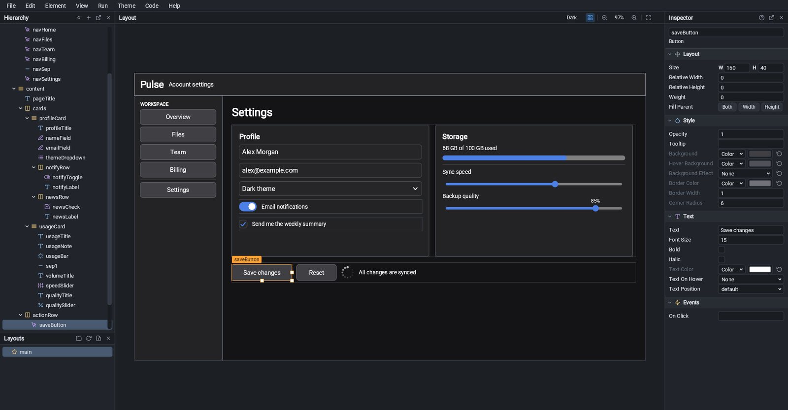
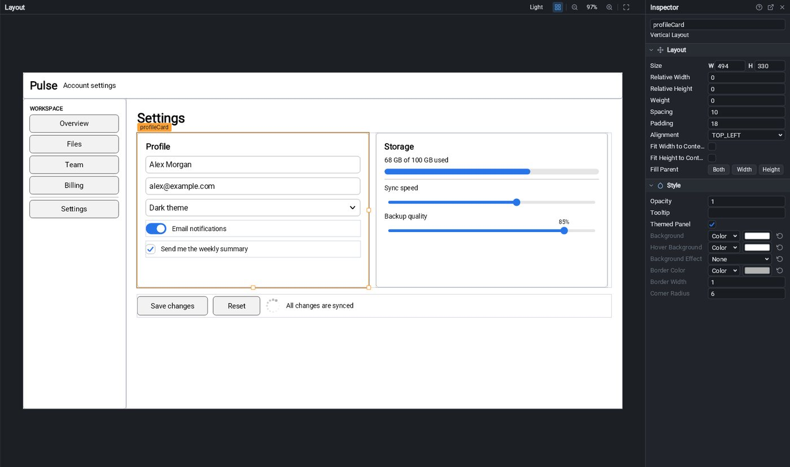
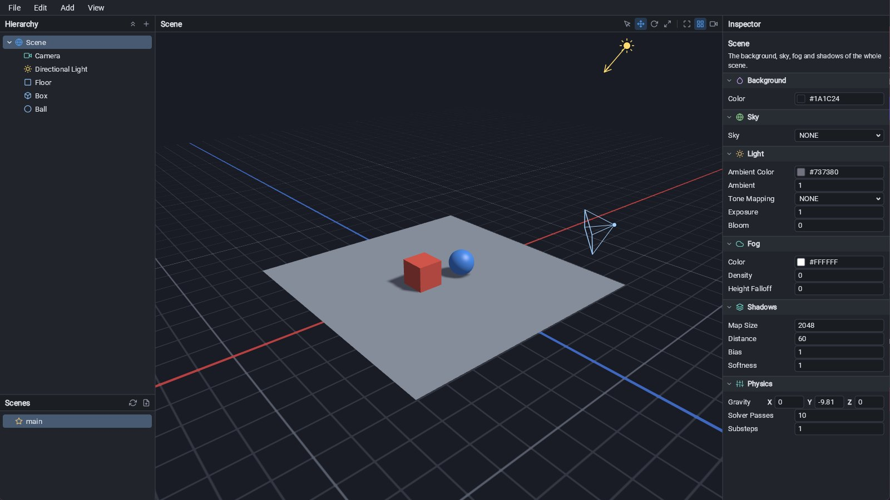

App
Screens built from containers and elements: layouts, buttons, text, images, fields, tabs and splits. A screen is a JSON layout the app loads with one line.
RenGL Editor
Drag, resize and style a screen on a canvas, see it the way your app will draw it, and run it in a window of its own. When a button needs to do something, the Java is one click away.

The editor is a RenGL app itself: every panel, tree and field in this screenshot is drawn by the toolkit it edits.
Three kinds of project
A new project is a Maven build that depends on RenGL, a Main class that starts it, an assets folder and a first scene or layout. Open it in the editor and go.
Screens built from containers and elements: layouts, buttons, text, images, fields, tabs and splits. A screen is a JSON layout the app loads with one line.
Scenes of entities with sprites, colliders and your own components, shown through a camera with a grid and zoom. Pick, move and nest entities in a hierarchy.
Scenes of meshes, models, materials and lights, with a camera and a sky. Move, rotate and scale with handles in a viewport drawn by the GPU, the way the game draws it.
The designer
The page in the middle is the real layout, drawn by the same engine that will run it. No preview mode to trust.
+ or the Element menu, rename with F2, reorder and nest.

Scenes in 2D and 3D
Games get the same editor with a viewport in place of the page.
From layout to running app
Run Layout opens your screen in a window of its own, with its own theme. Resize it to check anchors, docks and splits at other sizes, and turn on reload to follow every edit.
A code editor with highlighting and completion that asks the real Java compiler, so it knows your classes and the engine's. It docks beside the page or pops out into its own window.
Name a method on a button's click and the editor adds the method to your controller class. It only ever adds, so code you wrote is never touched.
A theme editor for the colors and corner size of every button, field and panel, saved in theme.json and loaded by the app, so the editor shows what ships.
Compile errors and stack traces from your project's code land in a console. Click a line and the file opens at that line in the code editor.
Press F1 on any element for its documentation: what it is for, how it behaves and every setting it has.
// Main: load the layout the editor saved, and connect the methods it names.
Container ui = UiFile.load("layouts/main.json");
window.addContainer(ui);
UiHandlers.bind(ui, new MainController(ui));
// MainController: the editor adds saveSettings() when a button's On Click is set to it.
public class MainController {
private final Container root;
public MainController(Container root) {
this.root = root;
}
public void saveSettings() {
UiFile.find(root, "savedText", TextOverlay.class).setText("Saved");
}
}Run the editor
The editor is a Java project that depends on the engine, so the engine goes into your local Maven repository first.
JDK 25 and a GPU with OpenGL 3.3 (or Metal on macOS). Skip this if you already did it for RenGL.
git clone https://github.com/piitex/RenGL.git
cd RenGL
./mvnw install -DskipTestsClone it beside the engine and open the folder in your IDE as a Maven project.
git clone https://github.com/piitex/RenGL-Editor.gitRun me.piitex.editor.EditorApp. It opens on a project hub to make or open a project. On macOS add the JVM flags.
-XstartOnFirstThread --enable-native-access=ALL-UNNAMED